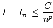
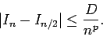
This problem highlights a basic theme in bounding errors: You begin with the term to be bounded and use the given information.
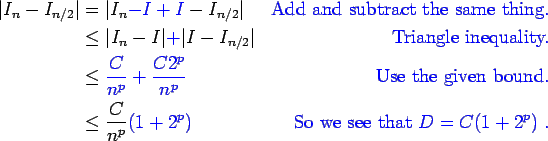
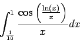
See the solution to problem 3.
This is just a question of computing things. To compute Simpson's rule, I took the intermediate step of using the trapezoid rule because it is conceptually simpler to do this. All but the last line of the table was posted in the lecture notes, so I complete the table here.
| N | MN | M2N-MN | TN | T2N-TN | SN | S2N-SN |
| 100 | 2.8664e-01 | 8.8986e-03 | 3.1909e-01 | -1.6223e-03 | 2.9746e-01 | 5.2458e-04 |
| 200 | 2.9554e-01 | 1.8820e-03 | 3.0286e-01 | -3.6624e-03 | 2.9798e-01 | 3.3855e-05 |
| 400 | 2.9742e-01 | 4.4824e-04 | 2.9920e-01 | -8.9022e-04 | 2.9801e-01 | 2.0871e-06 |
| 800 | 2.9787e-01 | 1.1069e-04 | 2.9832e-01 | -2.2099e-04 | 2.9802e-01 | 1.2988e-07 |
Here, we see that Simpson's rule picks up more than a digit of accuracy at every refinement while the other require more than two refinements to capture one more digit of accuracy.
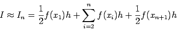
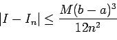
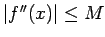
for all x on the domain of integration.
There are many ways to do this problem. In class, we discussed either using Taylor series or polynomial test functions.
We expand the general integral in a Taylor series so that we
acquire a trapezoid rule plus error terms. There are several ways to
set up this integral, and I present one of them here.
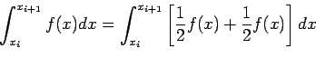
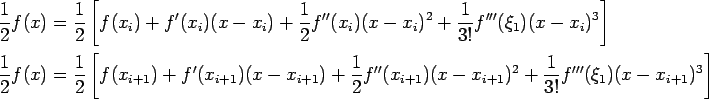
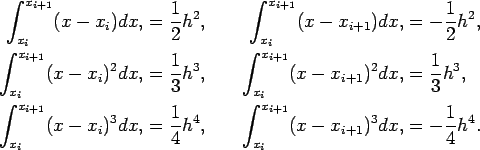
Thus,
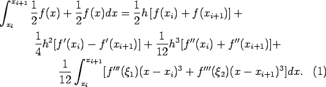
On the first line, we see that we have successfully acquired the trapezoid rule. The remaining terms describe the error in this quadrature.
Now, we need to expand in a Taylor series again.
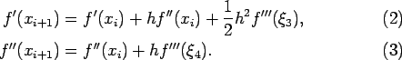
Substituting (2-3) into (1), we have
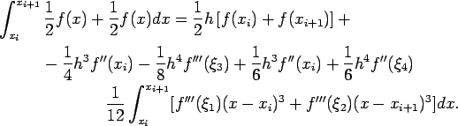
Thus,
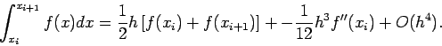
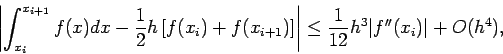
We anticipate a second order method, so we set up a second order
polynomial test function.
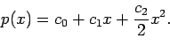
We seek the difference between the exact integral,
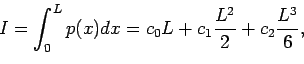
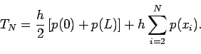
Changing the indices on the sum, and substituting
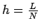
and xi= h(i-1),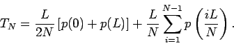
Now, we evaluate the polynomial and see what happens.
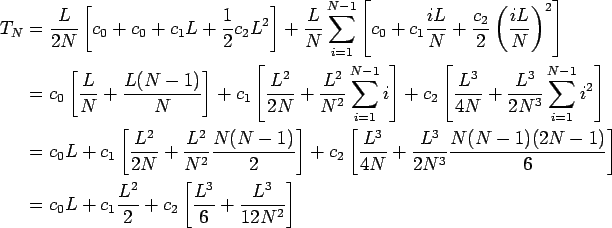
Thus, we see that
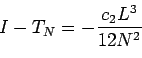
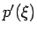
is prescribed,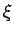
being any preassigned point.
For simplicity, I introduce the following notation:
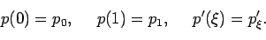
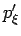
. Remember, we lose some information when we differentiate.) Anyway, here we go!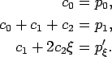
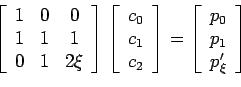
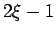
. Thus, the system is not invertible if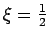
. If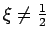
, the coefficients are uniquely determined from the data about p.
In the degenerate case,
, we must conclude that we
must assume that some of the coefficients of the second order
polynomial are linearly dependent, and we can introduce an extra order
to the polynomial. Thus,
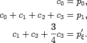
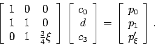
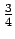
, so we know that c0, d and c3 can always be determined uniquely. Again, there is some freedom is choosing the pair c1 and c2 as long as the sum is d.
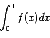
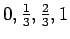
.
Here, since we must integrate the polynomial explicitly, I would recommend using a divided difference table as shown in the class notes.
| 0 | f(0) | |||
|
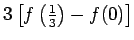 |
||||
|
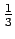 |
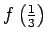 |
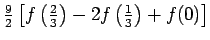 |
||
|
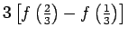 |
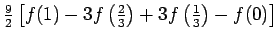 |
|||
|
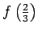 |
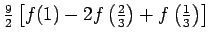 |
|||
|
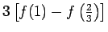 |
||||
| 1 | f(1) |
Thus, the correct interpolating polynomial is
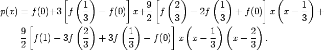
To find the quadrature coefficients, we integrate over the panel.
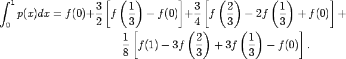
Now, we collect terms for each evaluation of f.
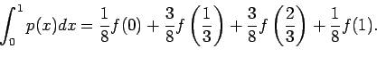